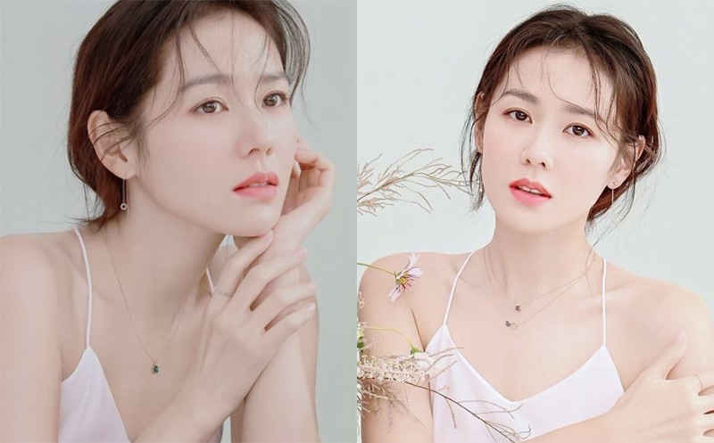
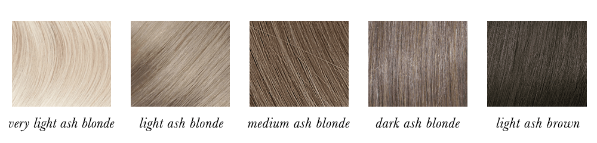
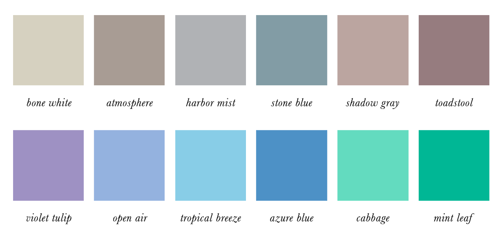
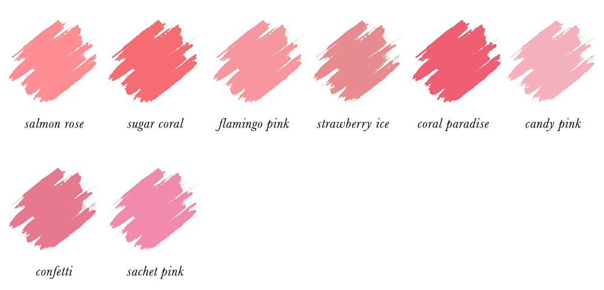
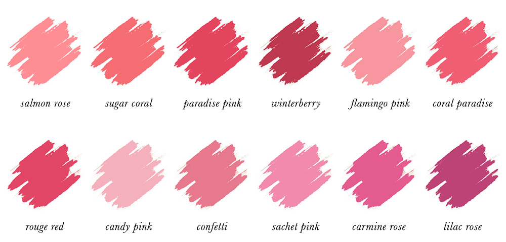
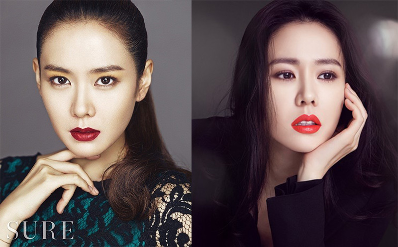

LIGHT
TRUE
SOFT
Feature
Colors
LIGHT SUMMER
-Feature-

여름 쿨톤 라이트 - 손예진
피부 특징
여름 쿨톤 라이트는 붉은기와 노란기가 모두 적은 투명하고 화사한 핑크빛 피부톤을 가지고 있고,
특유의 청량하고 맑은 이미지로 깨끗함 그 자체가 느껴집니다.
헤어 특징

여름 쿨톤 라이트의 머리카락은 가벼운 느낌입니다.
차가운 빛에서 중간 톤의 애쉬 금발 또는 연한 애쉬 브라운까지 다양합니다.
메이크업
아이섀도우

블러셔

립

아이 메이크업은 래쉬와 라인을 강조하고
블러셔는 딸기우유, 연보라 컬러로 수채화처럼 발색하는 것이 잘 어울립니다.
립은 옅고 흰끼 섞인 핑크 컬러가 좋습니다.
워스트 스타일링

여름 쿨 라이트 타입은 진한 아이메이크업과 채도 높은 오렌지와 레드 컬러는
피하시는 것을 추천합니다. 장점인 투명하고 맑은 느낌을 가릴 수 있습니다.